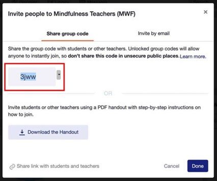

EDMODO
WHAT IS EDMODO?
I recently discovered an educational website that could revolutionize the teaching and learning experience. Edmodo is a platform that adapts social network features to suit the classroom environment. Founded by former educators Nic Borg and Jeff O’Hara in 2008, Edmodo was created with the goal of bridging the gap between traditional classroom education and the digital world. Over the years, Edmodo has evolved incorporating tools for personalized learning, assessments, and collaboration. In 2017, it added features that allow parents to monitor their children’s educational progress.
FEATURES OF EDMODO
Parental Access
Parents can create their own Edmodo accounts to track their child’s progress. They can see upcoming assignments, grades, and other important updates related to their child’s education.With Edmodo, parents are always in the loop about their child's academic journey, without needing to wait for traditional parent-teacher conferences.
Assignments and Quizzes
Edmodo allows teachers to create quizzes or tests to assess students’ understanding of a topic. These can include multiple-choice, true/false, or short-answer questions, and teachers can automatically grade these quizzes.The platform supports automatic feedback for students, letting them know their scores right after completing the quiz. Edmodo also allows teachers to create tasks and tests that students can complete and submit online with automatic grading and feedback

Virtual Classroom Communities
Teachers use Edmodo to create groups where students collaborate on projects, discuss topics, and share resources in a safe, controlled environment. This fosters teamwork and peer learning, making it easier for students to interact and learn together beyond the classroom. It also encourages students to take an active role in their learning, promoting a sense of community and engagement.
JumpStart Activity
Edmodo has introduced a new features called JumpStart Activity, which is similiar to platforms like Kahoot! and Quizizz. This feature includes engaging, visually appealing backgrouns designed to capture students' attention. The JumpStart Activity is game-based and requires live sessions for participation, and it also includes a grading system that displays results at the end of the game.
WAYS TO UTILISE EDMODO

Adding a Co-Teacher to your Edmodo group allows you to collaborate with another educator, sharing the responsibility of managing your students' activities and tasks. This can be especially helpful in large classes or when you want to split up the workload. To add a Co-Teacher to your group, follow these steps:
1. Invite the Co-Teacher: First, send an invitation to the Co-Teacher using the group code. This ensures they have access to the specific group you want them to assist with.
2. Access the Members Tab: Once the Co-Teacher has joined the group, go to the Members tab, which is located on the left-hand side panel of your Edmodo page.
3. Select the Co-Teacher Role: Find the name of the teacher you want to promote to Co-Teacher. Click on the More drop-down arrow next to their name, and from the options provided, select Co-Teacher.
4. Co-Teacher Capabilities: Once you assign them as a Co-Teacher, they will have the ability to assist with grading assignments, monitoring student discussions, and managing the members of the group. This role gives them a lot of power in supporting classroom activities but with some limitations. This feature is particularly useful for educators who want to share responsibilities but maintain clear boundaries regarding the management of the group. With a Co-Teacher in place, you can focus on teaching while they help with grading, monitoring, and student engagement.
BENEFITS OF EDMODO
FOR TEACHERS
1. Customized Learning
Edmodo allows teachers to create personalized learning experiences to each student which is particularly beneficial for meeting diverse learning needs. Educators can assign specific tasks or resources based on students’ strengths, challenges, or interests, facilitating a more individualized approach to education. By utilizing Edmodo’s gradebook and feedback system to monitor progress, teachers can easily pinpoint where a student may need additional support and adapt their teaching methods accordingly. This personalized strategy enhances student engagement and ensures that every learner gets the assistance they need to progress at their own pace.
2. Improved Communication and Parent Engagement
A significant advantage of Edmodo is its capacity to simplify communication among teachers, students, and parents. Teachers can distribute announcements, share assignments, and post grades, keeping everyone informed. Parents can view their child’s assignments, monitor progress, and stay updated on deadlines or areas needing improvement. This transparent communication fosters a stronger partnership between home and school, allowing parents to become more involved in their child’s education. It also enables teachers to swiftly address any concerns, contributing to a more collaborative and supportive learning atmosphere for students.
FOR STUDENTS
Accessible
Edmodo lets students access their learning materials, assignments, and resources whenever they want and from any device with the internet. This means they can go over lessons, finish assignments, and interact with class materials outside of school hours, which helps them learn on their own. Being able to work at their own pace allows students to study when it suits them best, improving their time management and helping them remember information better.
Accessible
Edmodo boosts student engagement by providing interactive features like discussion boards, quizzes, and polls. Students can join discussions in real-time, work together on group projects, and share resources with each other. These tools make learning more lively and engaging, encouraging students to participate actively. This kind of interaction helps them understand the subject better and also builds their critical thinking, teamwork, and communication skills.
PERSONAL REVIEW
As a student, I find Edmodo to be an incredibly helpful platform for staying organized and engaged with my schoolwork. One of the things I really like is that I can access all my assignments, grades, and class materials in one place, which makes it easy to keep track of what I need to do. The ability to submit assignments online and receive feedback from my teachers right away helps me understand what I am doing well and where I can improve. Plus, my parents can track my assignments, grades, and progress, which helps them stay informed about my education. It is good to know they can support me by keeping up with my school activities and offering help when needed. Overall, Edmodo is really recommended in today’s learning.